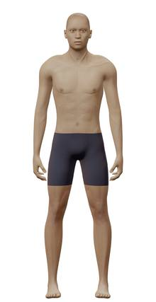
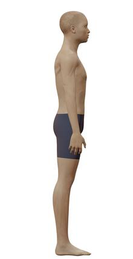
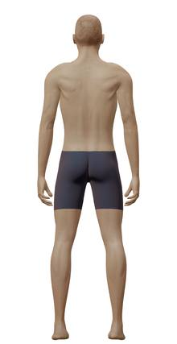
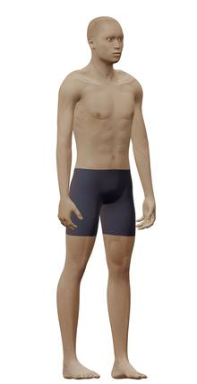
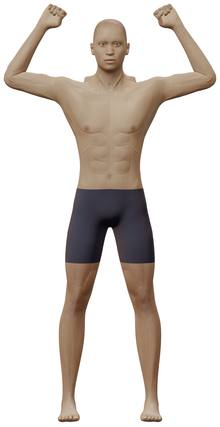
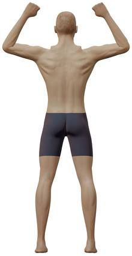
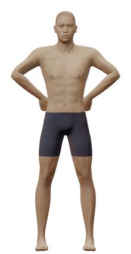
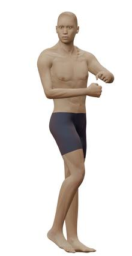
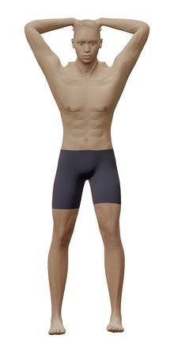
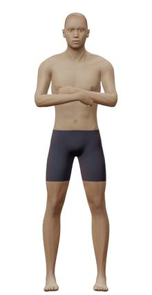

Dibujos para el visor
El mismo hombre en todas las imágenes. Toca una para verla en grande.
Ficha
 frente
frente frente
frenteMano y pie derechos
Grasa corporal
6 % · 68,1 kg
10 % · 71,1 kg
 frente
frente perfil
perfil espalda
espalda15 % · 75,3 kg
25 % · 85,3 kg
30 % · 91,4 kg
40 % · 106,7 kg
Músculo
En el visor el músculo casi no cambia el cuerpo: dibuja cada nivel como dice su rótulo.
Poco músculo · 61,2 kg · sin entrenar: hombros estrechos, pecho plano, brazos y piernas finos
Mucho músculo · 81,0 kg · muy entrenado: hombros redondos, pecho lleno, espalda en V, brazos gruesos
Culturista · 91,8 kg · trapecios altos; deltoides, espalda y muslos muy grandes
Edad
En el visor la edad solo cambia algo la piel de la cara (a los 18 sale igual que la ficha): dibuja cada edad como dice su rótulo.
18 años · cara algo más llena y piel más tersa
 cabeza · perfil
cabeza · perfil


40 años · primeras líneas en la frente y junto a los ojos


55 años · arrugas en la frente, los ojos y las comisuras; cuello y brazos algo menos firmes


75 años · arrugas marcadas; piel más fina y floja en cuello, brazos y abdomen


Poses


Relajado · frente

Relajado · lado

Relajado · espalda

Relajado · tres cuartos

Doble bíceps · frente

Doble bíceps · espalda

Apertura de dorsales

Pecho lateral

Abdominales y muslos

Brazos cruzados